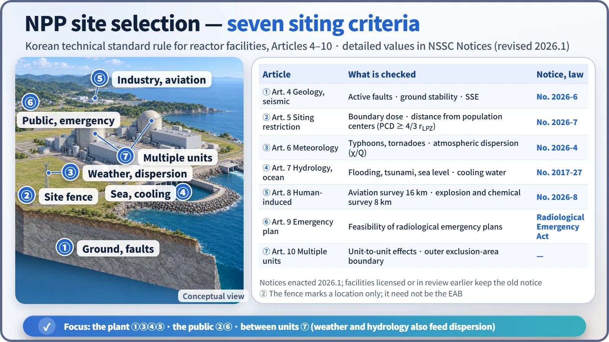

Operation, Regulation & Quality · C-OP-006
NPP Site Selection Criteria — Seven Siting Criteria and the Exclusion Area, Low Population Zone and Population Center Distance
How a reactor site is judged: external hazards, hypothetical-accident dose at the EAB and LPZ, separation from population centers and the feasibility of emergency plans.
Site selection criteria judge whether a place for a reactor facility (1) does not compromise plant safety through external hazards such as earthquakes, floods and aircraft crashes, (2) keeps public exposure in a hypothetical accident below the limits, and (3) allows emergency plans to be carried out. In South Korea they are set by Articles 4 to 10 of the Korean technical standard rule for reactor facilities and the detailed NSSC Notices under it.
Site evaluation looks in two directions: "the effect of the site on the plant" (external hazards → design-basis inputs) and "the effect of the plant on the public" (dispersion of radioactive material, population distribution).
Principle and mechanism
Legal flow
- Korea's Nuclear Safety Act, Article 11, item 2: as a construction-permit criterion, "the location, structure and equipment conform to the technical standards so that there is no obstacle to disaster prevention."
- Article 10: under paragraph 3, early site approval can be obtained before applying for a construction permit; under paragraph 4, once approved, construction within the scope set by Prime Ministerial decree may begin. Under paragraph 5, the application includes a site survey report and a radiological environmental report. At the construction permit stage the site is reviewed through Chapter 2, "Site characteristics", of the Preliminary Safety Analysis Report (PSAR).
The seven siting items of the technical standard rule
| Article | Item | Requirement | Detailed notice (current) |
|---|---|---|---|
| Art. 4 | Geology and seismology | Low likelihood of earthquakes and crustal movement, no surface collapse or subsidence, stable slopes and foundation | Geology and seismology standard (No. 2026-6) |
| Art. 5 | Siting restriction | Distance from population centers; public dose in an accident meets the detailed criteria | Siting restriction standard (No. 2026-7) |
| Art. 6 | Meteorology | Typhoons, heavy snow, heavy rain, tornadoes; atmospheric dispersion and dilution | Meteorology standard (No. 2026-4) |
| Art. 7 | Hydrology and oceanography | Dam failure and river flooding; tsunami, sea level and waves; dispersion in water; securing industrial and cooling water | Hydrology and oceanography standard (No. 2017-27) |
| Art. 8 | Human-induced events | No effect from accidents at hazardous industrial facilities or transport | Human-induced events standard (No. 2026-8) |
| Art. 9 | Emergency planning | Area where radiological emergency plans can be carried out | (Radiological emergency law framework) |
| Art. 10 | Multiple units | No interaction between units; exclusion area calculated per unit, then the outer envelope | — |

Siting restriction: exclusion area, low population zone and population center distance
The size of the site is set by "the dose a person at the boundary would receive in a hypothetical large accident" (siting restriction standard, No. 2026-7).
- Exclusion area: the area where the licensee controls access and residence. At its boundary (EAB, exclusion area boundary) the dose must be no more than 250 mSv effective dose over the 2 hours after the accident that give the highest exposure. It is not automatically the same line as the fence or the property boundary.
- Low population zone (LPZ): the area outside the exclusion area with few enough residents that protective actions are feasible in an accident. At its outer boundary the dose must be no more than 250 mSv effective dose over the entire period of passage of the radioactive cloud. When the Annex 1 source term is used, that period is taken as 30 days.
- Population center distance (PCD): the distance from the reactor to the nearest boundary of an area with 25,000 or more residents. It is not a zone set directly by dose but a minimum separation linked to the LPZ distance: PCD ≥ 1⅓ (= 4/3) × the distance to the outer boundary of the LPZ. For example, if the LPZ is 6 km, the PCD must be at least 8 km.
The notice also sets the dose-assessment conditions.
- The core inventory is taken at its maximum for maximum power, enrichment and burnup.
- The release fractions consider core melting (Annex 1 for a large LOCA in a PWR with burnup up to 68 GWd/MTU).
- The atmospheric dispersion factor is the accident χ/Q from the meteorology notice.
- The pathways are external exposure from the cloud and inhalation; the breathing rate for 0–8 h is 3.5×10⁻⁴ m³/s.
- The EAB dose is roughly "release × χ/Q × dose coefficient", so it falls with greater distance and better dispersion.
![Logarithmic distance axis from 0.5 to 500 km with rows for siting restriction (example LPZ 6 km and PCD at least 8 km by the 4/3 rule; EAB has no fixed distance), geology and seismic surveys at 1, 8, 40 and 320 km with faults of 300 m or longer within 8 km, human-induced event surveys at 8 km for explosions and chemicals and 16 km for aviation, RG 4.7 population density guidance to 20 miles or about 32 km at 500 per square mile or about 193 per square kilometre, and emergency planning zones PAZ 3 to 5 km and UPZ 20 to 30 km; a side card lists EAB and LPZ limits of 250 mSv effective dose and PCD of at least 4/3 of the LPZ radius](../../assets/images/concepts/c-op-006-site-selection-criteria/fig2-site-distance-radii.webp)
External-hazard evaluation radii
- Geology and seismology (No. 2026-6): investigations are divided into the regional 320 km, the site vicinity 40 km and 8 km, and the site area 1 km plus the foundation. Within 8 km, faults 300 m or longer are investigated for activity. An active fault is one with evidence of near-surface movement at least once in the past 50,000 years, or at least twice in the past 500,000 years, among others. If the site lies within the zone of surface faulting, safety must be demonstrated. The SSE is set deterministically and checked probabilistically; if its mean annual exceedance probability is greater than 10⁻³ per year, the SSE must be raised. The SSE is given as horizontal and vertical response spectra.
- Human-induced events (No. 2026-8): aircraft crashes are investigated within 16 km, and explosions and hazardous-chemical releases within 8 km. For hazardous chemicals the separation distance to the control room and the toxicity limit (based on 30-minute exposure) are assessed. Safety is demonstrated by the scale of the event or its probability.
- Hydrology and oceanography: safety-related facilities must sit above, or be protected against, the design-basis flood level (river flooding, dam failure, tsunami, storm surge, tide). The cooling water source is also checked for its function as the ultimate heat sink (UHS) (US RG 1.27: 30 days of cooling).
What it means in a plant
- Design inputs: the site SSE, design-basis flood level, design wind speed (typhoons, tornadoes) and aircraft-impact loads all come from site evaluation. Change the site and the design inputs change.
- Coastal sites in South Korea: Kori, Saeul, Wolsong, Hanul, Shin-Hanul and Hanbit are all on the coast, so large-volume seawater cooling and protection against tsunami are central. Reinforcing coastal barriers after Fukushima is an example.
- Multi-unit sites: South Korea places six to eight units on one site, so the unit-to-unit effects of Article 10 and the outer exclusion-area boundary are applied in practice.
- SMRs: some assessments say that if alternative source terms lower the calculated dose, the LPZ and PCD shrink, which could open the way to siting near industrial complexes. The radiological emergency planning zones (PAZ, UPZ), however, are set separately under the radiological emergency law.
Site criteria for other facilities: disposal and interim storage
Questions in the same family also ask about sites for facilities other than reactors.
- Low- and intermediate-level waste disposal facility: the Korean technical standard on the location of LILW disposal facilities requires:
- strata and sorption that retard radionuclide migration
- low groundwater velocity and long delay time
- a location above flood level and not adjacent to active faults
- no water-source protection areas
- deficient properties compensated by engineered barriers (Article 12)
- Spent fuel interim storage facility: separation from population centers, no active faults within 8 km, and conditions on aircraft, hazardous materials, dispersion and flooding.
Regulatory basis
| Basis | Key point |
|---|---|
| Korea's Nuclear Safety Act, Articles 10 and 11; Enforcement Decree Article 2, item 7; Act Article 89 | Construction permit and early site approval; definition and setting of the exclusion area |
| Korean technical standard rule for reactor facilities (NSSC Rule No. 37, 2026.3.30), Articles 3–10 | The seven siting items |
| NSSC Notices No. 2026-6, 2026-7 and 2026-8 (enacted 2026.1.20) | Detailed criteria for geology and seismology, siting restriction and human-induced events |
| 10 CFR 100.11 / 50.34(a)(1)(ii)(D) / 100.21 / 100.23 | Old EAB and LPZ criteria, 25 rem TEDE, non-seismic criteria, seismic |
| NRC RG 4.7 Rev. 4 (2024) | Recommends a cumulative average of no more than 500 persons/mi² (about 193 persons/km²) at each radius within 20 miles |
| IAEA SSR-1 (2019), SSG-9, 18, 35 and 79 | Site evaluation requirements and hazard-specific guides |
Changes since the questions were set: on 20 January 2026 the "Technical Standards on the Location of Reactor Facilities" were abolished. That notice had adopted US criteria by reference in its annex. Three notices specific to South Korea (No. 2026-6, 2026-7 and 2026-8) replaced it.
- Final edition of the old siting notice: NSSC Notice No. 2017-15. With that revision, the articles it applied to were narrowed from Articles 4–9 of the rule to Articles 4, 5 and 8. Its annex adopted 10 CFR 100 App. A and 100.11, RG 1.78, 1.91, 1.95 and others.
- Wording of Article 5(2) of the rule: NSSC Rule No. 36 (2026.1.20) changed "the total radiation dose … does not exceed the value" to "meets the detailed criteria."
- Old criteria (adopting 10 CFR 100.11): 250 mSv whole body and 3 Sv thyroid at the exclusion area and LPZ boundaries
- Current: a single criterion of 250 mSv effective dose; the 30-day LPZ assessment period stated; active faults defined by 50,000 years
- Transitional measure: facilities and standard designs licensed or under review before then remain under the old notice.
- The 2024 question: it asked for the "criteria under the rule," so the seven items of Articles 4–10 form the backbone of the answer.
Easily confused pairs
| Exclusion area (EAB) | Low population zone (LPZ) | Emergency planning zones (PAZ, UPZ) | |
|---|---|---|---|
| Basis | Nuclear Safety Act, siting restriction notice | Siting restriction notice | Radiological emergency law, Article 20-2 |
| Purpose | Site size, access control | Feasibility of public protective actions | Public protection plans in an emergency |
| Criterion | Worst 2 h, 250 mSv | Cloud passage (30 days), 250 mSv; PCD ≥ 1⅓ LPZ | PAZ 3–5 km, UPZ 20–30 km (range for setting the outer limit) |
| Nature | Hypothetical-accident dose criterion | Hypothetical-accident dose criterion | Planning zone (not a dose limit) |
250 mSv is neither a public dose limit nor an evacuation criterion. It is a reference value for gauging the separation of a site against a hypothetical accident of very low probability (footnote to 10 CFR 100.11).
Key points at a glance
- Definition: site suitability criteria covering plant safety against external hazards, public dose in an accident and feasibility of emergency plans.
- Basis: Nuclear Safety Act Article 11, item 2 → technical standard rule Articles 4–10 → NSSC Notices.
- Seven items: geology and seismology / siting restriction / meteorology / hydrology and oceanography (including cooling water) / human-induced events / emergency planning / multiple units.
- Exclusion area boundary (EAB): worst 2 h, effective dose ≤ 250 mSv.
- Low population zone: outer boundary, cloud passage period (30 days with Annex 1), ≤ 250 mSv.
- Population center distance: to the nearest boundary of an area of ≥ 25,000 people; PCD ≥ 1⅓ × LPZ distance.
- Survey radii: geology 320, 40, 8 and 1 km; active faults 50,000/500,000 years; aircraft survey 16 km; explosion and chemical survey 8 km.
- Revision: old siting notice abolished 2026.1 → Notices No. 2026-6, 7, 8 (old 250 mSv whole body and 3 Sv thyroid → 250 mSv effective dose).
- International: 10 CFR 100.21 and 50.34, RG 4.7, IAEA SSR-1.

This is a model answer, not an official solution. It reflects the criteria current as of 2026.
Exam relevance
Site selection has appeared five times in the Korean Professional Engineer (Nuclear Power) exam: 63rd exam, session 2, Q3 (siting conditions for a radioactive waste repository); 2009 exam, session 3, Q6 (site selection criteria for reactors and interim storage facilities); 2010 exam, session 3, Q5 (NPP site selection criteria); 2020 exam, session 1, Q12 (exclusion area, low population zone and population center distance); and 2024 exam, session 3, Q1 (siting criteria for a new site under the technical standard rule). Typical questions ask you to list the siting criteria or to define the EAB, LPZ and PCD with their numerical criteria. When the question says "under the rule," build the answer on the seven items of Articles 4–10 and add the detailed values from the notices; and state the current single criterion of 250 mSv effective dose rather than the old whole-body and thyroid values.